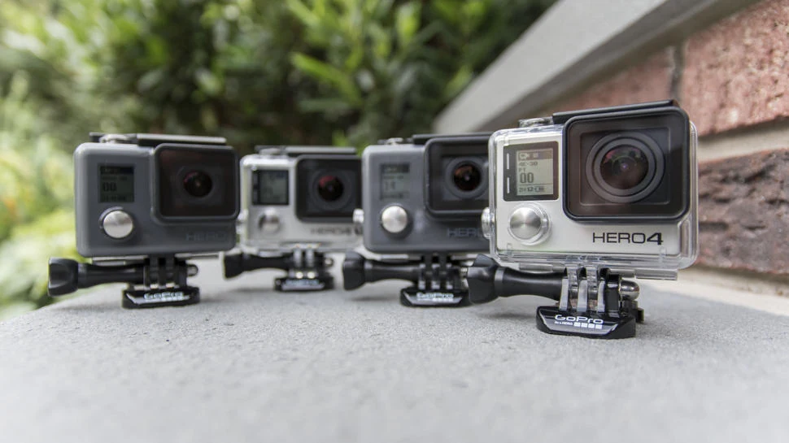

ФотокамерыЗеркальные, беззеркальные, компактные
В списке беззеркальных камер есть Sony, Olympus, Canon, Nikon, Fujifilm, Pentax и Panasonic. Среди опубликованных моделей — Sony ZV-E10, Canon EOS R и Nikon Z6. Для зеркальных и компактных камер у сервиса отдельные перечни.
ОбъективыСменная оптика и шесть марочных разделов
Мастерская описывает ремонт автофокуса, зума и диафрагмы. Если у модели несколько версий, укажите маркировку на оправе и байонет. Для чистки есть отдельные условия.
ВспышкиНакамерные и студийные
В разделе перечислены Canon, Nikon, Metz, Nissin, Sigma, Sunpak и Yongnuo. Опишите, появляется ли импульс и определяет ли вспышку камера. Крупные студийные вспышки принимают редко — перед визитом согласуйте модель.
Видео- и кинокамерыБытовые и профессиональные камеры
Сервис указывает Sony, Canon, Panasonic, JVC, Blackmagic и RED. Для оценки сообщите точную модель и что происходит при включении или записи.
Экшн-камерыGoPro и другие производители
У GoPro есть отдельная страница о серии HERO. В общем разделе указаны модели Sony, Kodak, HP, Polaroid и AEE. Перед передачей уточните приём своей версии.

НоутбукиАппаратный ремонт
Мастерская занимается аппаратными поломками ноутбуков. В числе марок — Apple, Sony, Toshiba, Lenovo, HP, Dell, Acer, Asus и Samsung. Восстановление данных и программное обслуживание в этот раздел не входят.
Диагностика и чистка
Диагностика
Бесплатна при последующем ремонте. Внешний осмотр, функциональное тестирование и консультации также входят в перечень бесплатных услуг.
Перечень услугСрочная, с актом
В экспресс-прайсе указаны 1 500 ₽ и ориентир 20–30 минут. Экспресс-работы проводят по будням после 14:00. Возможность приёма уточните по телефону.
Экспресс-прайсЧистка и профилактика
Для зеркальных камер бесплатна продувка матрицы. На влажную чистку в основном и экспресс-прайсе указаны разные цены. Уточните стоимость для своей камеры.